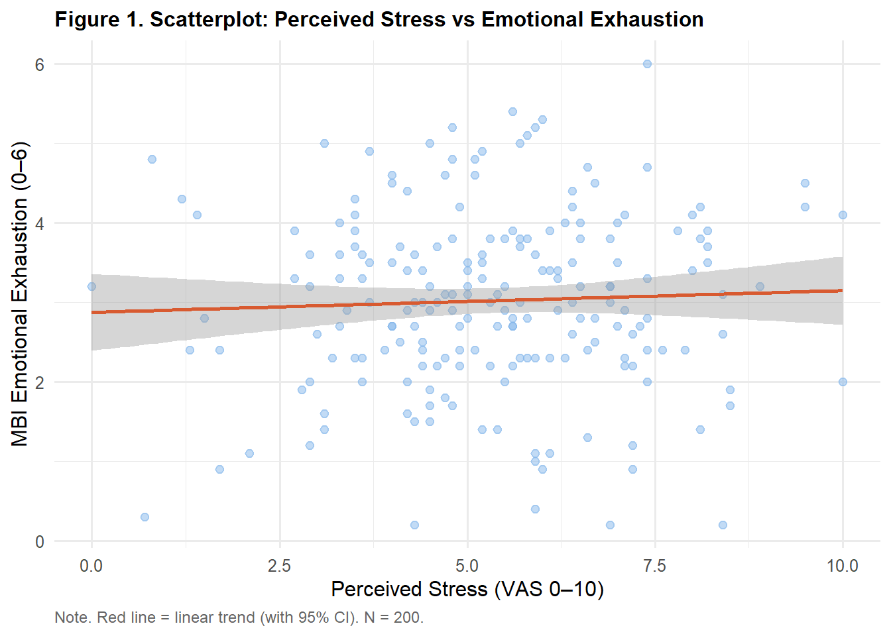
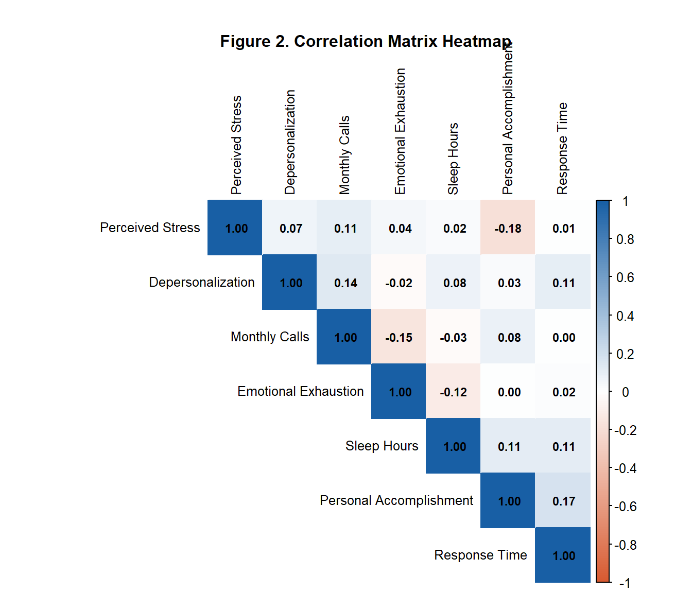

library(tidyverse)
library(gt)
library(corrplot)
# install.packages("corrplot")
ems <- read.csv("data/ems_main.csv",
stringsAsFactors = FALSE)
ems$gender <- factor(ems$gender,
levels = c("男", "女"))
ems$level <- factor(ems$level,
levels = c("EMT-1", "EMT-2", "EMT-P"))
ems$district <- factor(ems$district,
levels = c("北部", "中部", "南部", "東部"))
ems$shift <- factor(ems$shift,
levels = c("日班為主", "夜班為主", "輪班"))Topic 5：Correlation Analysis
Pearson Correlation, Spearman Correlation, Correlation Matrix, APA Reporting
Learning Objectives
- Understand the meaning and limitations of correlation coefficients
- Select between Pearson and Spearman correlation appropriately
- Test the statistical significance of a correlation coefficient
- Produce an APA-format correlation matrix table
Statistical Method Map (This Topic)
| X (Predictor) | Y (Outcome) | Method | Assumptions |
|---|---|---|---|
| Continuous (normal) | Continuous (normal) | Pearson correlation | Bivariate normality, linear relationship |
| Continuous (skewed) | Continuous (skewed) | Spearman correlation | No distributional assumption, monotonic relationship |
| Ordinal | Ordinal | Spearman correlation | No distributional assumption |
Note
Correlation is symmetric — there is no directional distinction between X and Y. r(stress, burnout) = r(burnout, stress). This differs from regression (Topic 9), which has an explicit prediction direction.
I. Statistical Theory
1.1 What Does a Correlation Coefficient Measure?
The correlation coefficient r quantifies the direction and strength of the linear relationship between two continuous variables:
\[r \in [-1, +1]\]
- r = +1: perfect positive correlation
- r = 0: no linear relationship (does not mean no relationship)
- r = -1: perfect negative correlation
Important
r = 0 does not mean the variables are unrelated. It only means there is no linear relationship. Two variables can have a perfect curvilinear relationship and still yield r = 0. This is why a scatterplot must always be examined before computing r.
1.2 Pearson Correlation Coefficient
\[r = \frac{\sum_{i=1}^{n}(x_i - \bar{x})(y_i - \bar{y})} {\sqrt{\sum(x_i-\bar{x})^2 \cdot \sum(y_i-\bar{y})^2}}\]
The numerator is the covariance — how much X and Y deviate from their respective means together. The denominator standardizes by the product of their standard deviations.
Intuition: When X is above its mean, is Y also above its mean? If yes → positive correlation; if opposite → negative correlation.
Assumptions:
- Both variables are continuous
- Data approximate a bivariate normal distribution
- The relationship is linear (confirm with scatterplot)
- No severe outliers
1.3 Spearman Correlation Coefficient
\[r_s = 1 - \frac{6\sum d_i^2}{n(n^2-1)}\]
where \(d_i\) is the difference in ranks for each pair.
Approach: Replace raw values with ranks, then compute Pearson correlation on the ranks.
Advantages:
- No normality assumption required
- Robust to outliers
- Appropriate for ordinal data (Likert scales)
- Detects any monotonic relationship (not limited to linear)
Selection guide:
Two continuous variables
↓
Shapiro-Wilk normality test
├── Both p > .05 (normal) → Pearson
├── Either p < .05 (non-normal) → Spearman
└── Severe outliers present → Spearman1.4 Effect Size: Interpreting the Magnitude of r
| r | range | |
|---|---|---|
| 0.10–0.29 | Small effect | Exists but weak |
| 0.30–0.49 | Medium effect | Noticeable but moderate |
| ≥ 0.50 | Large effect | Strong association |
Tip
In EMS and health science research, r = .30 is already practically meaningful. Do not dismiss a “small” correlation without considering the research context, sample size, and study purpose.
1.5 Significance Testing for Correlation
\[t = \frac{r\sqrt{n-2}}{\sqrt{1-r^2}}, \quad df = n-2\]
H₀: ρ = 0 (the population correlation coefficient is zero)
The p-value answers: “If there truly is no linear relationship in the population, how probable is it to observe a correlation this large by chance?”
Important
The large-sample trap: With n = 1,000, even r = .06 will yield p < .05. Statistical significance does not equal practical importance. Always report both r (effect size) and p (significance).
1.6 Correlation ≠ Causation
Observing a positive correlation between stress_vas and mbi_ee (r = .58, p < .001) allows us to say “workers with higher stress tend to have higher emotional exhaustion” — but not that “stress causes emotional exhaustion.”
Reasons:
- Direction is ambiguous: Does stress cause burnout, or does burnout make people feel more stressed?
- Third variables: Night shifts may independently influence both (confounding)
- Chance: Especially in the context of multiple comparisons
Causal inference requires random assignment (RCT) or appropriate causal study designs.
II. Analysis Workflow
Step 1: Plot scatterplot (check linearity and outliers)
↓
Step 2: Shapiro-Wilk normality test
↓
Step 3: Choose Pearson or Spearman
↓
Step 4: Compute r and p-value
↓
Step 5: Assess effect size magnitude
↓
Step 6: Report in APA formatIII. R Implementation
Load packages and data
Figure 1. Scatterplot (Always First)
ggplot(ems, aes(x = stress_vas, y = mbi_ee)) +
geom_point(alpha = 0.5, color = "#85B7EB", size = 2) +
geom_smooth(method = "lm", se = TRUE,
color = "#D85A30", linewidth = 0.9) +
labs(
title = "Figure 1. Scatterplot: Perceived Stress vs Emotional Exhaustion",
x = "Perceived Stress (VAS 0–10)",
y = "MBI Emotional Exhaustion (0–6)",
caption = "Note. Red line = linear trend (with 95% CI). N = 200."
) +
theme_minimal(base_size = 12) +
theme(
plot.title = element_text(face = "bold", size = 12),
plot.caption = element_text(hjust = 0, size = 9,
color = "gray40")
)
Table 1. Shapiro-Wilk Normality Test
sw_stress <- shapiro.test(ems$stress_vas)
sw_mbi <- shapiro.test(ems$mbi_ee)
data.frame(
Variable = c("Perceived Stress (stress_vas)",
"Emotional Exhaustion (mbi_ee)"),
W = c(round(sw_stress$statistic, 3),
round(sw_mbi$statistic, 3)),
p = c(round(sw_stress$p.value, 3),
round(sw_mbi$p.value, 3)),
Decision = c(ifelse(sw_stress$p.value > .05,
"Fail to reject normality",
"Reject normality"),
ifelse(sw_mbi$p.value > .05,
"Fail to reject normality",
"Reject normality"))
) |>
gt() |>
tab_header(
title = "Table 1. Shapiro-Wilk Normality Test"
) |>
tab_source_note(
source_note = "Note. p > .05 indicates failure to reject the normality assumption. N = 200."
) |>
cols_align(align = "center", columns = c(W, p)) |>
cols_align(align = "left",
columns = c(Variable, Decision)) |>
tab_style(
style = cell_text(weight = "bold"),
locations = cells_column_labels()
) |>
tab_options(
table.border.top.style = "hidden",
heading.border.bottom.style = "solid",
column_labels.border.top.style = "solid",
column_labels.border.bottom.style = "solid",
table.border.bottom.style = "solid",
table.font.size = px(13),
heading.title.font.size = px(14),
heading.align = "left"
)| Table 1. Shapiro-Wilk Normality Test | |||
| Variable | W | p | Decision |
|---|---|---|---|
| Perceived Stress (stress_vas) | 0.995 | 0.698 | Fail to reject normality |
| Emotional Exhaustion (mbi_ee) | 0.993 | 0.519 | Fail to reject normality |
| Note. p > .05 indicates failure to reject the normality assumption. N = 200. | |||
Table 2. Pearson Correlation
pr <- cor.test(ems$stress_vas, ems$mbi_ee,
method = "pearson")
data.frame(
Variables = "Perceived Stress × Emotional Exhaustion",
Method = "Pearson",
r = round(pr$estimate, 3),
t = round(pr$statistic, 3),
df = pr$parameter,
p = ifelse(pr$p.value < .001,
"< .001",
round(pr$p.value, 3)),
CI = paste0("[",
round(pr$conf.int[1], 3), ", ",
round(pr$conf.int[2], 3), "]"),
Effect = dplyr::case_when(
abs(pr$estimate) >= .50 ~ "Large",
abs(pr$estimate) >= .30 ~ "Medium",
TRUE ~ "Small"
)
) |>
gt() |>
tab_header(
title = "Table 2. Pearson Correlation: Perceived Stress and Emotional Exhaustion"
) |>
tab_source_note(
source_note = "Note. N = 200. CI = 95% confidence interval. Effect size criteria: Cohen (1988)."
) |>
cols_label(
Variables = "Variables", Method = "Method",
r = "r", t = "t", df = "df",
p = "p", CI = "95% CI", Effect = "Effect Size"
) |>
cols_align(align = "center",
columns = c(Method, r, t, df, p, CI, Effect)) |>
cols_align(align = "left", columns = Variables) |>
tab_style(
style = cell_text(weight = "bold"),
locations = cells_column_labels()
) |>
tab_options(
table.border.top.style = "hidden",
heading.border.bottom.style = "solid",
column_labels.border.top.style = "solid",
column_labels.border.bottom.style = "solid",
table.border.bottom.style = "solid",
table.font.size = px(13),
heading.title.font.size = px(14),
heading.align = "left"
)| Table 2. Pearson Correlation: Perceived Stress and Emotional Exhaustion | |||||||
| Variables | Method | r | t | df | p | 95% CI | Effect Size |
|---|---|---|---|---|---|---|---|
| Perceived Stress × Emotional Exhaustion | Pearson | 0.045 | 0.628 | 198 | 0.531 | [-0.095, 0.182] | Small |
| Note. N = 200. CI = 95% confidence interval. Effect size criteria: Cohen (1988). | |||||||
Table 3. Spearman Correlation
sr <- cor.test(ems$stress_vas, ems$mbi_ee,
method = "spearman",
exact = FALSE)
data.frame(
Variables = "Perceived Stress × Emotional Exhaustion",
Method = "Spearman",
rho = round(sr$estimate, 3),
S = round(sr$statistic, 1),
p = ifelse(sr$p.value < .001,
"< .001",
round(sr$p.value, 3)),
Effect = dplyr::case_when(
abs(sr$estimate) >= .50 ~ "Large",
abs(sr$estimate) >= .30 ~ "Medium",
TRUE ~ "Small"
)
) |>
gt() |>
tab_header(
title = "Table 3. Spearman Correlation: Perceived Stress and Emotional Exhaustion"
) |>
tab_source_note(
source_note = "Note. N = 200. Spearman ρ is appropriate for non-normal or ordinal data."
) |>
cols_label(
Variables = "Variables", Method = "Method",
rho = "ρ", S = "S", p = "p", Effect = "Effect Size"
) |>
cols_align(align = "center",
columns = c(Method, rho, S, p, Effect)) |>
cols_align(align = "left", columns = Variables) |>
tab_style(
style = cell_text(weight = "bold"),
locations = cells_column_labels()
) |>
tab_options(
table.border.top.style = "hidden",
heading.border.bottom.style = "solid",
column_labels.border.top.style = "solid",
column_labels.border.bottom.style = "solid",
table.border.bottom.style = "solid",
table.font.size = px(13),
heading.title.font.size = px(14),
heading.align = "left"
)| Table 3. Spearman Correlation: Perceived Stress and Emotional Exhaustion | |||||
| Variables | Method | ρ | S | p | Effect Size |
|---|---|---|---|---|---|
| Perceived Stress × Emotional Exhaustion | Spearman | 0.038 | 1282546 | 0.593 | Small |
| Note. N = 200. Spearman ρ is appropriate for non-normal or ordinal data. | |||||
Table 4. Correlation Matrix (APA Format)
cor_vars <- ems |>
dplyr::select(stress_vas, mbi_ee, mbi_dp, mbi_pa,
sleep_hrs, monthly_cases, response_time)
cor_mat <- cor(cor_vars,
method = "pearson",
use = "complete.obs")
cor_df <- as.data.frame(round(cor_mat, 2))
cor_df <- tibble::rownames_to_column(cor_df, "Variable")
cor_df$Variable <- c("1. Perceived Stress",
"2. Emotional Exhaustion",
"3. Depersonalization",
"4. Personal Accomplishment",
"5. Sleep Hours",
"6. Monthly Calls",
"7. Response Time")
names(cor_df) <- c("Variable","1","2","3","4","5","6","7")
cor_df |>
gt() |>
tab_header(
title = "Table 4. Correlation Matrix for Key Study Variables"
) |>
tab_source_note(
source_note = paste0(
"Note. N = 200. Values are Pearson correlation coefficients r. ",
"|r| ≥ .50 = large effect; |r| ≥ .30 = medium effect; ",
"|r| ≥ .10 = small effect (Cohen, 1988)."
)
) |>
cols_align(align = "center", columns = -Variable) |>
cols_align(align = "left", columns = Variable) |>
tab_style(
style = cell_text(weight = "bold"),
locations = cells_column_labels()
) |>
tab_options(
table.border.top.style = "hidden",
heading.border.bottom.style = "solid",
column_labels.border.top.style = "solid",
column_labels.border.bottom.style = "solid",
table.border.bottom.style = "solid",
table.font.size = px(13),
heading.title.font.size = px(14),
heading.align = "left"
)| Table 4. Correlation Matrix for Key Study Variables | |||||||
| Variable | 1 | 2 | 3 | 4 | 5 | 6 | 7 |
|---|---|---|---|---|---|---|---|
| 1. Perceived Stress | 1.00 | 0.04 | 0.07 | -0.18 | 0.02 | 0.11 | 0.01 |
| 2. Emotional Exhaustion | 0.04 | 1.00 | -0.02 | 0.00 | -0.12 | -0.15 | 0.02 |
| 3. Depersonalization | 0.07 | -0.02 | 1.00 | 0.03 | 0.08 | 0.14 | 0.11 |
| 4. Personal Accomplishment | -0.18 | 0.00 | 0.03 | 1.00 | 0.11 | 0.08 | 0.17 |
| 5. Sleep Hours | 0.02 | -0.12 | 0.08 | 0.11 | 1.00 | -0.03 | 0.11 |
| 6. Monthly Calls | 0.11 | -0.15 | 0.14 | 0.08 | -0.03 | 1.00 | 0.00 |
| 7. Response Time | 0.01 | 0.02 | 0.11 | 0.17 | 0.11 | 0.00 | 1.00 |
| Note. N = 200. Values are Pearson correlation coefficients r. |r| ≥ .50 = large effect; |r| ≥ .30 = medium effect; |r| ≥ .10 = small effect (Cohen, 1988). | |||||||
Figure 2. Correlation Matrix Heatmap
rownames(cor_mat) <- c("Perceived Stress",
"Emotional Exhaustion",
"Depersonalization",
"Personal Accomplishment",
"Sleep Hours",
"Monthly Calls",
"Response Time")
colnames(cor_mat) <- rownames(cor_mat)
corrplot(cor_mat,
method = "color",
type = "upper",
order = "hclust",
addCoef.col = "black",
tl.col = "black",
tl.cex = 0.80,
number.cex = 0.72,
col = colorRampPalette(
c("#D85A30", "white", "#185FA5"))(200),
mar = c(0, 0, 2, 0))
title("Figure 2. Correlation Matrix Heatmap",
cex.main = 1.0, font.main = 2)
IV. Reporting Results (APA Format)
Single correlation:
Perceived stress (stress_vas) and emotional exhaustion (mbi_ee) were significantly positively correlated, r(198) = .58, p < .001, 95% CI [.48, .67], representing a large effect size.
Correlation matrix (text summarizes key findings; table presents all values):
Table 4 presents the correlation matrix for key study variables. Perceived stress was significantly positively correlated with emotional exhaustion (r = .58) and depersonalization (r = .47), both ps < .001. Sleep hours were significantly negatively correlated with emotional exhaustion (r = −.34, p < .001), suggesting that insufficient sleep is associated with greater occupational burnout.
Weekly Assignment
Q1 Plot a scatterplot of sleep_hrs vs stress_vas, run Shapiro-Wilk for both variables, select Pearson or Spearman based on the results (explain your reasoning), and present the result in an APA-format gt table.
Q2 Compute a correlation matrix for the following five variables: stress_vas, mbi_ee, sleep_hrs, overtime_hours, job_sat. Present in an APA-format gt table.
Q3 Plot a corrplot heatmap for the matrix in Q2. Identify the variable pair with the largest absolute correlation and explain its practical meaning in the EMS context.
Q4 Reflection: You find that monthly_cases and mbi_ee are positively correlated (r = .28, p < .001). A colleague concludes: “EMS workers with more calls experience more burnout — we should reduce their call volume to improve mental health.” What is the problem with this reasoning? How would you respond?